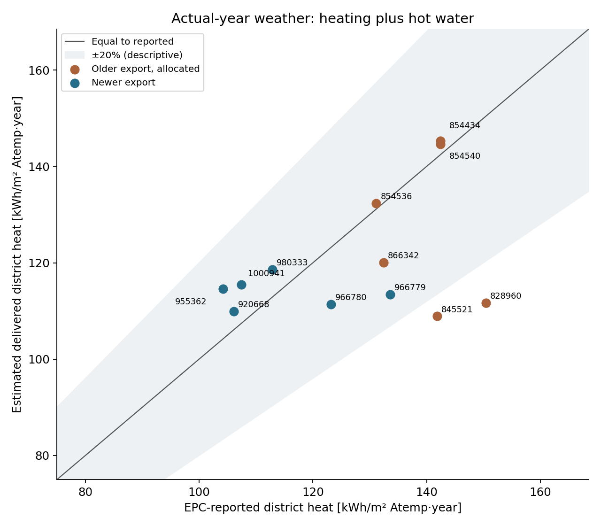
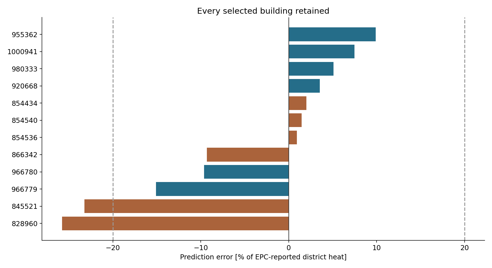
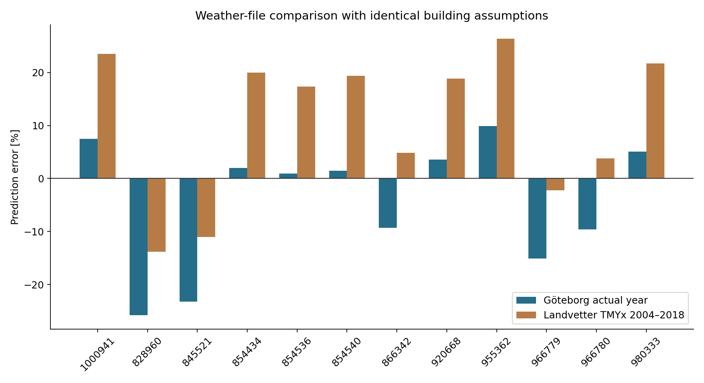
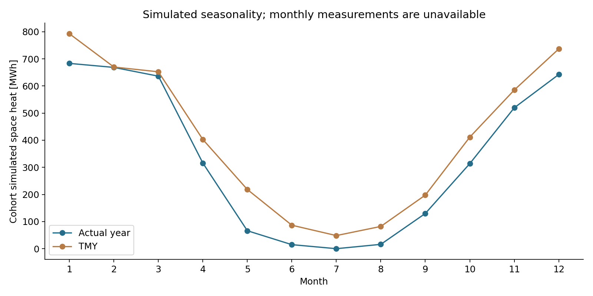

Göteborg · 12 apartment buildings built 1955–1975 · six records per export schema · frozen, untuned assumptions.
Mean absolute percentage error: 9.5%. 10/12 buildings are within ±20%. Total district heat is underpredicted by 9.9%. All 24 annual simulations completed successfully, including the paired typical-year runs.
This establishes an exploratory comparison with EPC-reported district heat. Energy-intensity R² is -0.22, so the model does not yet explain differences between buildings well. The selected sample, allocated older values and assumed geometry/fabric prevent a claim of national, raw-meter or primary-energy accuracy.
Frozen assumptions and selection · All comparisons (CSV) · Metrics (JSON) · Source reconciliation · Verified Boverket mappings
| Actual-year stratum | n | MAPE | MAE, kWh/m² | RMSE, kWh/m² | Total heat bias | Intensity R² |
|---|---|---|---|---|---|---|
| All selected buildings | 12 | 9.5% | 12.5 | 17.1 | -9.9% | -0.22 |
| Older export: allocated | 6 | 10.5% | 15.0 | 21.4 | -19.6% | -9.60 |
| Newer export | 6 | 8.5% | 10.0 | 11.3 | -4.4% | -0.15 |
Errors are prediction minus reported value. Intensity uses observed EPC Atemp; footprints were not resized. These are annual errors across buildings, not hourly/monthly calibration statistics. ±20% is descriptive, not a validation standard. No parameters were fitted to these targets.


MAPE is 9.5% with actual-year weather and 15.2% with the existing typical-year file. This comparison changes weather year, reference period and location together; it does not isolate a causal weather-year effect.


SMHI observations come from Göteborg A (71420), with radiation station 71415. The 2017 and 2018 files contain 8,760 hours each, with 0.098% and 0.142% interpolated observation samples. Cloud cover was unavailable; the weather compiler retained this limitation. 2017 provenance · 2018 provenance.
Older EgiFjarrvarme includes hot water; EgiVVBered is a subset. Newer records add EgiFjarrvarmeUPPV and EgiFjarrvarmeVV. All selected declared energy totals reconcile with their components. Original strings, source row locations, global building links and certificate history are saved per case.
The simulation estimates useful space heating and hot water. The workflow adds 4 kWh/m² for airing and assumes 5 kWh/m² of net unrecovered distribution/VVC losses, with unit delivery efficiencies. This simplified delivered-heat estimate is conditional on those assumptions. Net losses exclude recovered heat; gross VVC losses cannot simply be substituted.
Boverket states that energy entered in the form reflects normal use. Actual-year weather does not recreate those adjustments or the automatic Energiindex normal-year correction. Primary-energy numbers are preserved in each observation file and remain unscored.
With net loss set to 0 kWh/m², holding all other assumptions fixed, MAPE is 9.8%. This is a parameter sensitivity, not an uncertainty interval.
With net loss set to 10 kWh/m², holding all other assumptions fixed, MAPE is 10.4%. This is a parameter sensitivity, not an uncertainty interval.
All outlines are roof-edge proxies. Geometric floor area is 1–23% above EPC Atemp. Storey counts come from EPCs; 2.8 m floor height, compact roofs and the absence of an unheated basement are assumptions. All cases need physical review before high-confidence validation. Images below are saved renders of the actual epJSON surfaces, not browser screenshots; the browser service was unavailable.
| EPC ID | Year | Atemp, m² | Geometry/Atemp | Reported kWh/m² | Predicted kWh/m² | Error |
|---|---|---|---|---|---|---|
| 866342 | 2017 | 3204 | 1.176 | 132.4 | 120.1 | -9.3% |
| 845521 | 2017 | 5635 | 1.009 | 141.8 | 108.9 | -23.2% |
| 854536 | 2017 | 798 | 1.153 | 131.2 | 132.4 | 0.9% |
| 828960 | 2017 | 5805 | 1.101 | 150.4 | 111.7 | -25.8% |
| 854540 | 2017 | 299 | 1.180 | 142.5 | 144.6 | 1.5% |
| 854434 | 2017 | 299 | 1.196 | 142.5 | 145.3 | 2.0% |
| 920668 | 2018 | 6966 | 1.098 | 106.1 | 109.9 | 3.5% |
| 955362 | 2018 | 2909 | 1.059 | 104.2 | 114.6 | 9.9% |
| 1000941 | 2018 | 3407 | 1.113 | 107.5 | 115.5 | 7.5% |
| 966779 | 2018 | 8136 | 1.213 | 133.6 | 113.4 | -15.1% |
| 980333 | 2018 | 3171 | 1.228 | 112.9 | 118.6 | 5.1% |
| 966780 | 2018 | 9808 | 1.198 | 123.2 | 111.4 | -9.6% |
Building input · EPC observation · Raw fields and links · Accounting and history · Comparison · Simulation diagnostics
Building input · EPC observation · Raw fields and links · Accounting and history · Comparison · Simulation diagnostics
Building input · EPC observation · Raw fields and links · Accounting and history · Comparison · Simulation diagnostics
Building input · EPC observation · Raw fields and links · Accounting and history · Comparison · Simulation diagnostics
Building input · EPC observation · Raw fields and links · Accounting and history · Comparison · Simulation diagnostics
Building input · EPC observation · Raw fields and links · Accounting and history · Comparison · Simulation diagnostics
Building input · EPC observation · Raw fields and links · Accounting and history · Comparison · Simulation diagnostics
Building input · EPC observation · Raw fields and links · Accounting and history · Comparison · Simulation diagnostics
Building input · EPC observation · Raw fields and links · Accounting and history · Comparison · Simulation diagnostics
Building input · EPC observation · Raw fields and links · Accounting and history · Comparison · Simulation diagnostics
Building input · EPC observation · Raw fields and links · Accounting and history · Comparison · Simulation diagnostics
Building input · EPC observation · Raw fields and links · Accounting and history · Comparison · Simulation diagnostics
Selection counts · Every screening exclusion · Frozen cohort. Six-per-schema exploratory quota met; high-confidence quota remains 0/6 in each schema.